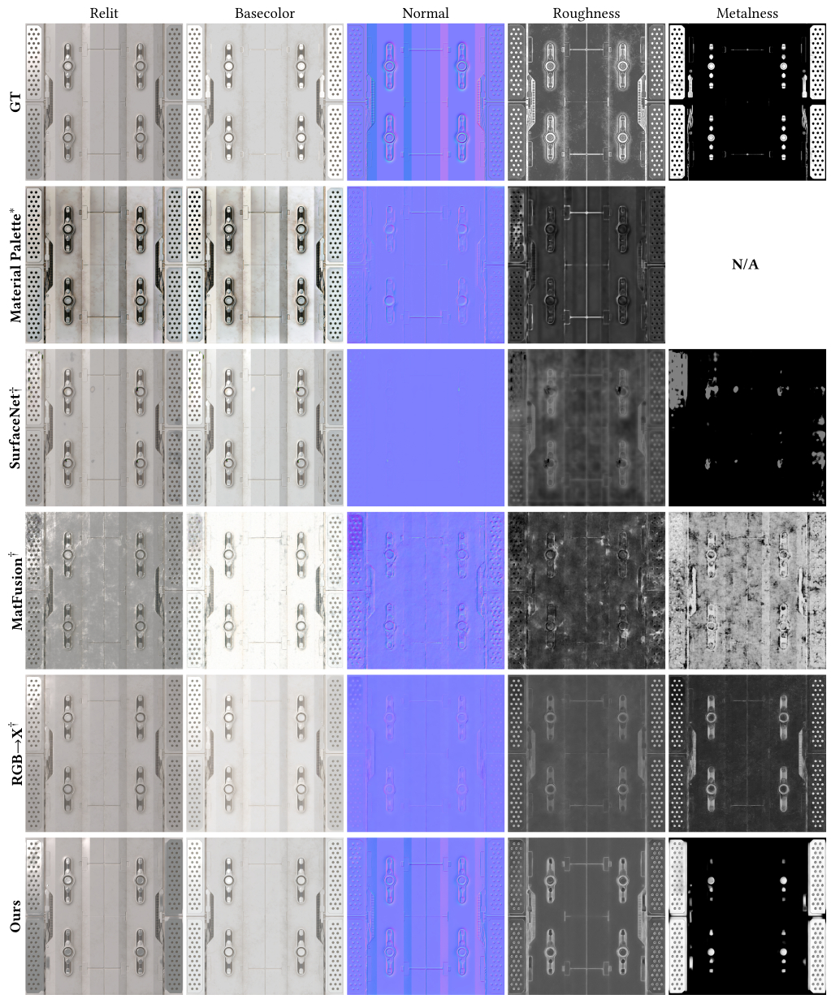
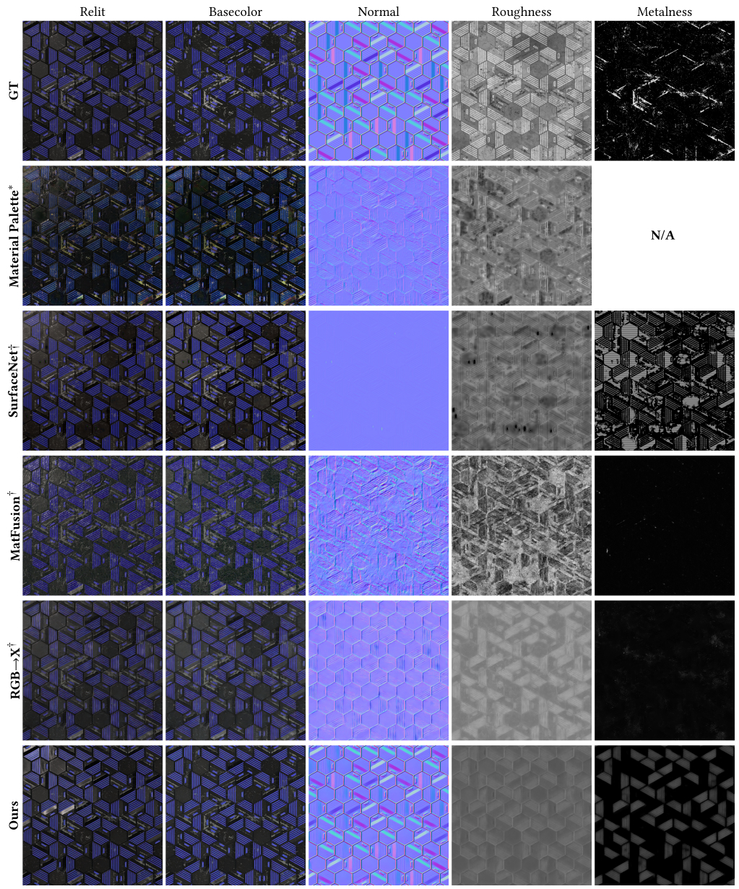
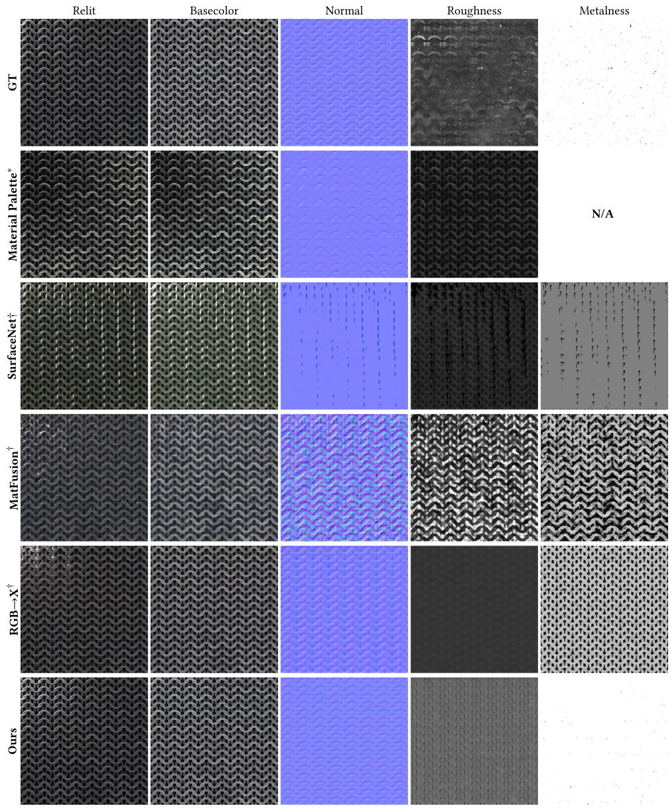
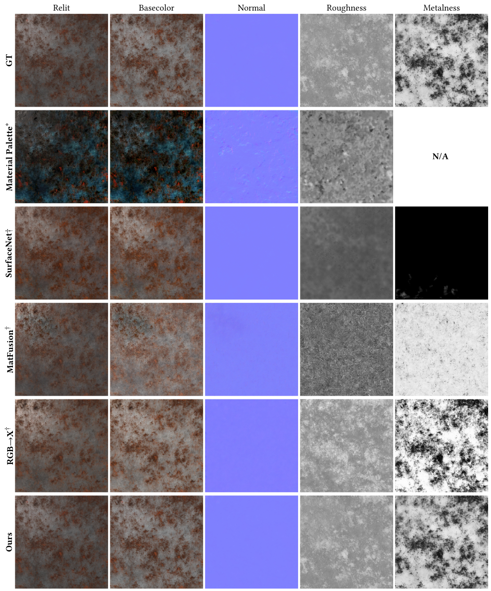
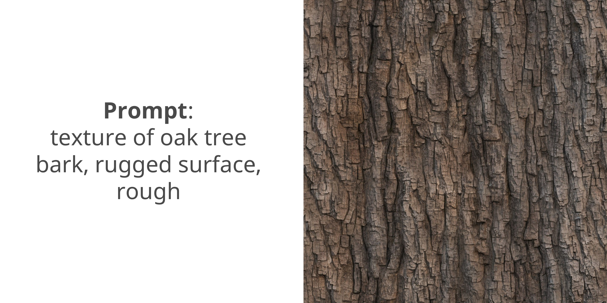

In this paper we propose a generate-and-estimate framework to produce high-quality SVBRDF channels for physically-based rendering of materials. In the generation stage, we leverage the diverse conditioning techniques of text-to-image models to synthesize tileable texture images with creative control. In the estimation stage, we introduce a chain-of-rendering-decomposition (Chord) scheme, which sequentially predicts SVBRDF channels by feeding previously extracted representations into a single-step, image-conditioned diffusion model. Our material estimation method demonstrates strong robustness on both generated textures and in-the-wild photographs. Moreover, we showcase the flexibility of our entire framework across diverse applications, including text-to-material, image-to-material, structure-guided generation, and material editing.
Stage 1: Tileable texture image ($ I_\text{RGB} $) generation using a fine-tuned diffusion model, controllable via user guidance (text prompts, reference images, or other control types).
Stage 2: Material estimation predicts SVBRDF channels sequentially:




$\dagger$: re-trained on our dataset, $\ast$: author-provided weights.

BibTex Code Here